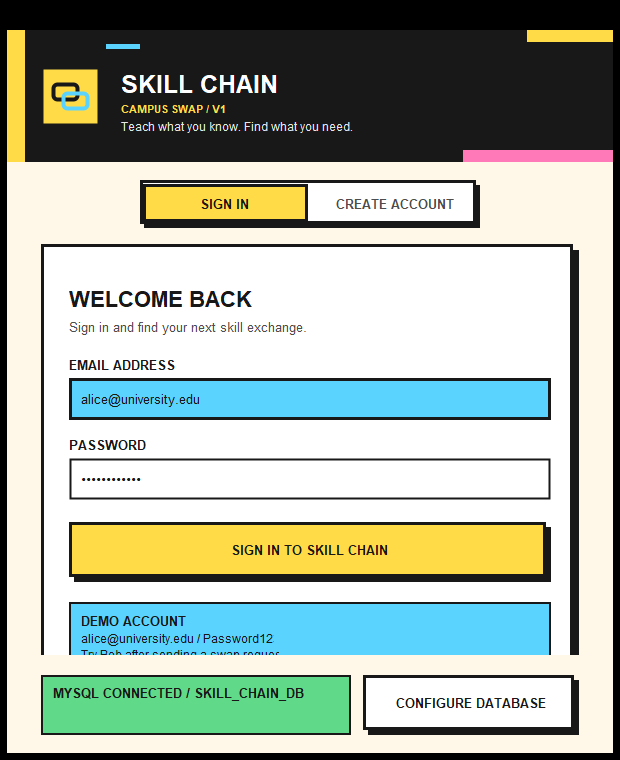
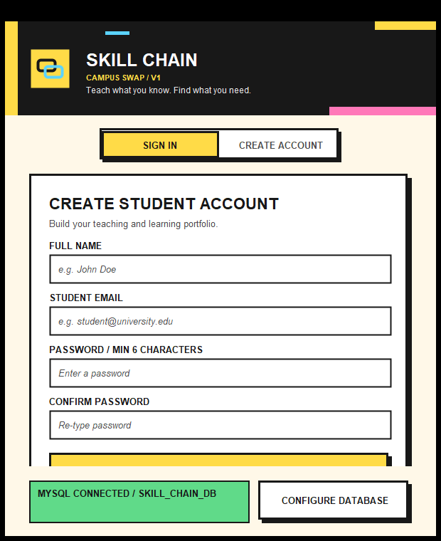
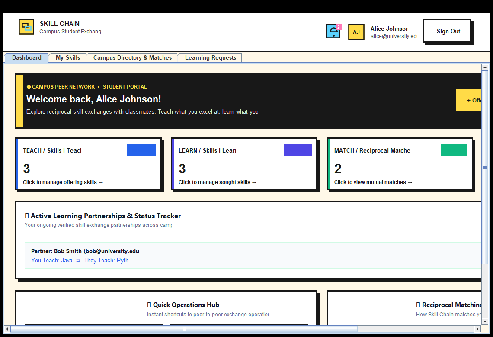
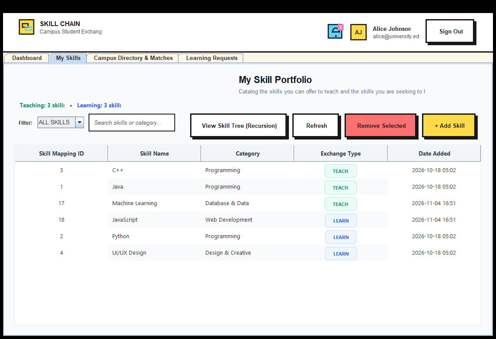
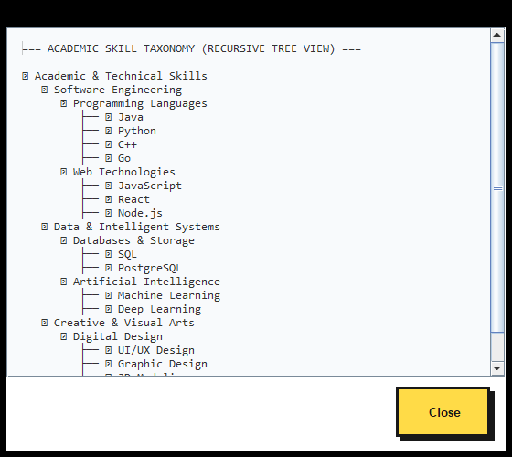
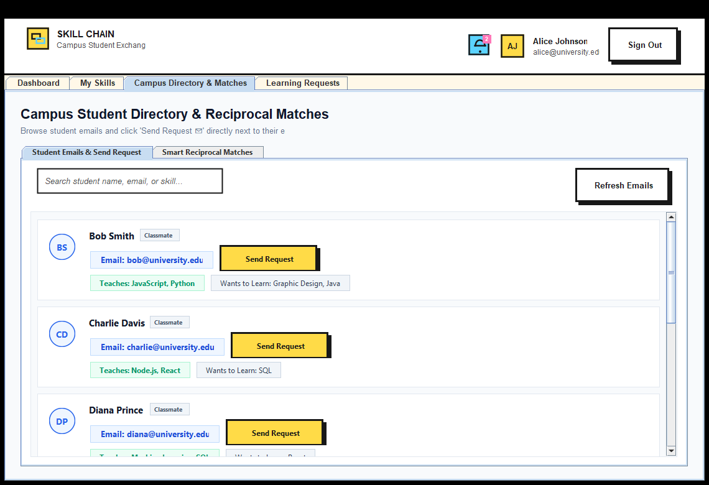
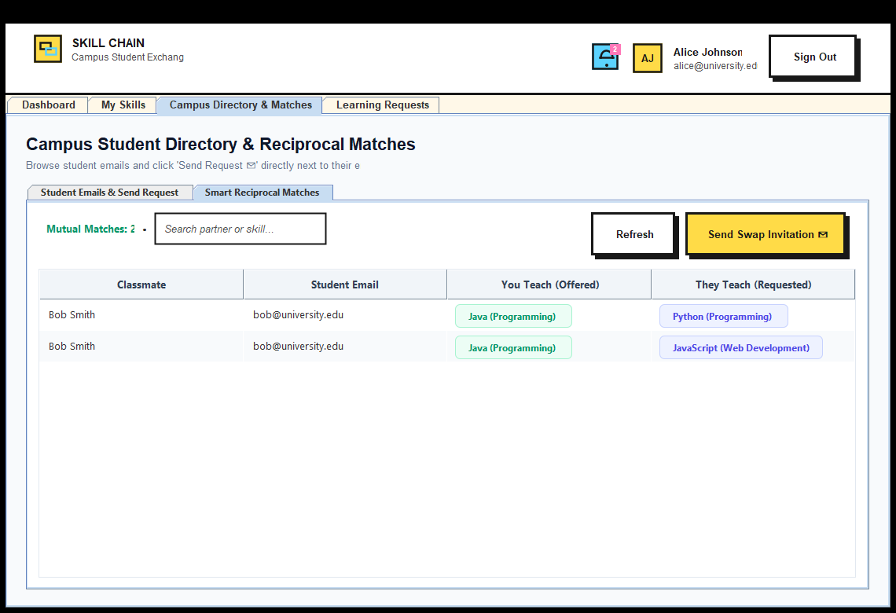
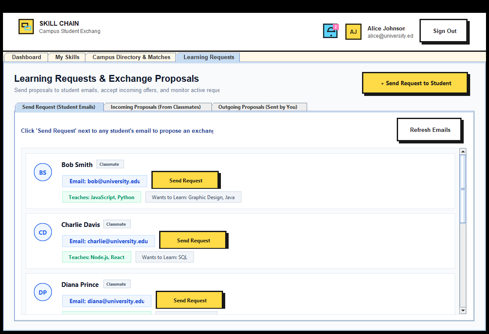
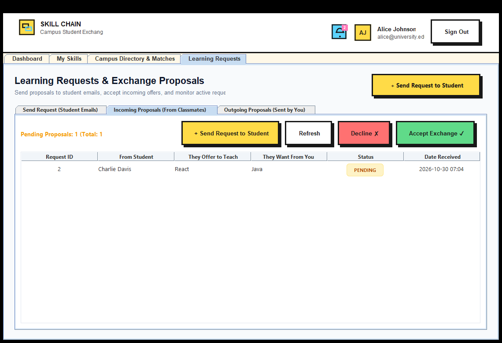
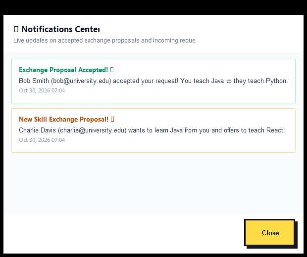

Submitted by * VARSHA K – 250701807 * VANDHANA M – 250701804 * VARSHINI S – 250701809 * VARSSINI A – 250701811
of
BACHELOR OF ENGINEERING
in
Department of Computer Science and Engineering
RAJALAKSHMI ENGINEERING COLLEGE, THANDALAM
(An Autonomous Institution)
November 2026
Certified that this project report titled “SKILL CHAIN: CAMPUS PEER-TO-PEER SKILL EXCHANGE PLATFORM” is the bonafide work of “VARSHA K (250701807), VANDHANA M (250701804), VARSHINI S (250701809), VARSSINI A (250701811)” who carried out the project work under my supervision.
---------------------------------------------------- ----------------------------------------------------
SIGNATURE SIGNATURE
Internal Faculty Name Internal Faculty Name
Course Incharge Course Incharge
Object oriented programming system Database management system
Department of Computer Science and Engineering Department of Computer Science and Engineering
---------------------------------------------------- ----------------------------------------------------
INTERNAL EXAMINER EXTERNAL EXAMINER
In today’s world, peer learning and knowledge sharing systems are very important and essential for academic ecosystems. This management system is an application-based system, to manage students and mark their skill portfolios. Every organisation whether government, private, or academic institutions uses an information system to store and coordinate data of their members. This project is useful for providing an easy and responsive graphical user interface.
The system uses the powerful relational database management system, data retrieval, and data manipulation. This project provides more ease for managing skill exchange data than manually maintaining and searching across disconnected chat groups. Hence it saves a lot of valuable student time. So, we can say that the project is useful for saving valuable time and reducing huge paperwork.
The main objective of this integrated project is to add, update, delete, view, search, and match student skill details. The Skill Chain: Campus Peer-to-Peer Skill Exchange Platform is a comprehensive solution designed to streamline and automate various aspects of peer knowledge exchange within a university campus. This project aims to develop a user-friendly and efficient desktop platform that facilitates student authentication, maintenance of teaching and learning skill portfolios, automated two-way reciprocal matchmaking, exchange request negotiations, active partnership tracking, and instant notifications.
Skill Chain captures and stores detailed student information including student names, institutional emails, salted password hashes, teaching proficiencies, and learning aspirations. This project helps in systematically organizing and querying peer data that needs to be accessed. The system was developed using foundational technologies such as MySQL database and Java (JDBC) with Java Swing GUI.
| CHAPTER | CONTENTS | PAGE NO. |
|---|---|---|
| 1 | INTRODUCTION | |
| • PROBLEM STATEMENT | 5 | |
| • PROJECT OVERVIEW | 5 | |
| • PURPOSE | 5 | |
| • SCOPE | 5 | |
| 2 | FUNCTIONALITIES PROVIDED | 6 |
| 3 | SYSTEM FLOW DIAGRAM | |
| • DATAFLOW DIAGRAM | 8 | |
| • USE CASE DIAGRAM | 9 | |
| • ENTITY RELATIONSHIP DIAGRAM | 10 | |
| 4 | MODULE DESCRIPTION | 11 |
| 5 | IMPLEMENTATION | |
| • JDBC CONNECTION CODE | 12 | |
| • MAIN LAUNCHER CODE | 14 | |
| • LOGIN AND REGISTRATION PAGE | 16 | |
| • DASHBOARD AND ACTIVE PARTNERSHIPS | 21 | |
| • ADD SKILL PAGE | 26 | |
| • VIEW AND SEARCH SKILLS PAGE | 30 | |
| • DELETE SKILL PAGE | 34 | |
| • RECURSIVE CATEGORY TREE TAXONOMY | 38 | |
| • CAMPUS STUDENT DIRECTORY PAGE | 42 | |
| • RECIPROCAL MATCHING ENGINE | 46 | |
| • LEARNING REQUESTS (ACCEPT / REJECT) | 50 | |
| • NOTIFICATION CENTER | 54 | |
| 6 | CONCLUSION | 56 |
| 7 | REFERENCES | 57 |
On university campuses, students frequently seek to acquire specialized technical, mathematical, and design skills outside their formal syllabus. However, discovering compatible classmates who possess the desired skills and are simultaneously eager to learn what the first student can teach is extremely challenging. Informal inquiries across campus social media groups are unorganized, unindexed, lack confidentiality, and fail to calculate two-way reciprocal compatibility. An automated, centralized student skill exchange platform is required to manage student profiles, catalog skills, compute mutual matches, and track exchange agreements securely.
The Skill Chain: Campus Peer-to-Peer Skill Exchange Platform is a comprehensive solution designed to streamline and automate various aspects of peer knowledge exchange within an educational institution. This project aims to develop a user-friendly and efficient desktop platform that facilitates student authentication, maintenance of personal skill inventories (skills offered to teach and skills sought to learn), automated two-way reciprocal matchmaking, proposal requests negotiation, active partnership tracking, and real-time notification alerts.
Skill Chain captures and securely stores detailed student information including student names, verified university emails, cryptographically salted password hashes, and skill-type mappings. Through an automated relational Reciprocal Matching Engine, the platform pairs students when: $$\text{Student A teaches what Student B wants to learn} \quad \land \quad \text{Student B teaches what Student A wants to learn}$$ This project helps in systematically organizing and querying student data that needs to be accessed, ensuring zero monetary cost for peer learning.
The system is aimed at total user-friendliness as well as efficient management of varied tasks: * To centralize and organize student skill portfolios in a systematic manner and to facilitate easy access to accurate and up-to-date peer data, reducing manual errors and ensuring data integrity. * To automate the identification of reciprocal exchange partners, eliminating days of manual inquiries. * To provide a structured system for creating, sending, reviewing, accepting, and declining skill exchange proposals. * To track active learning partnerships showing contact emails and mutual study obligations. * To safeguard sensitive student credentials through cryptographically salted SHA-256 password hashing. * To allow for potential expansion and inclusion of additional categories, ensuring the system can adapt to the evolving needs of the institution.
The system is aimed at total user-friendliness as well as efficient management of different tasks:
* Capturing and storing essential student information, including student names, university emails, password hashes, and registration timestamps.
* Providing a standardized academic catalog of skills categorized into programming, web development, data & AI, and digital design.
* Allowing students to tag skills as TEACH (skills offered) or LEARN (skills sought) with duplicate prevention.
* Enabling students to browse a campus-wide student directory displaying classmates' teaching and learning portfolios, equipped with direct "Send Request ✉" action buttons.
* Executing automated dual-conditional matching queries using indexed MySQL joins.
* Managing exchange request lifecycles (PENDING, ACCEPTED, REJECTED) with notification indicators.
* Designing an intuitive, aesthetic desktop interface for students and administrators using Java Swing.
System flow diagram helps in understanding the flow of information and processes within the system. The below displays such a representation for the project on Skill Chain: Campus Peer-to-Peer Skill Exchange Platform.
A Data Flow Diagram (DFD) is a visual way to show how data moves through a system or process. The below displays such a representation for the project on Skill Chain.
flowchart TD
User["Student User"] -->|1. Credentials / Sign-in| P_Login["Process: Login / Register"]
P_Login -->|Verify / Store| DB_Users[("Table: users")]
User -->|2. Manage Skills| P_Skills["Process: Add / Remove / View Skills"]
P_Skills -->|Update Portfolio| DB_UserSkills[("Table: user_skills")]
DB_Skills[("Table: skills")] -->|Catalog Lookup| P_Skills
User -->|3. Browse Directory & Matches| P_Match["Process: Reciprocal Matching Engine"]
DB_UserSkills -->|Read Portfolios| P_Match
P_Match -->|Display Mutual Pairs| User
User -->|4. Send / Respond Proposal| P_Requests["Process: Exchange Requests Management"]
P_Requests -->|Insert / Update Status| DB_Requests[("Table: learning_requests")]
DB_Requests -->|Live Status & Alerts| User
A use case diagram is a visual representation that depicts the interactions between actors (users) and a system, illustrating various ways the system can be utilized or the functionalities it offers. The below displays such a representation for the project on Skill Chain.
flowchart LR
Student((Student Member))
subgraph SkillChainSystem["Skill Chain System"]
UC1["Login to System"]
UC2["Register New Account"]
UC3["View Dashboard & Metrics"]
UC4["Add Skill (TEACH / LEARN)"]
UC5["View / Search My Skills"]
UC6["Remove Skill from Portfolio"]
UC7["View Recursive Category Tree"]
UC8["Browse Campus Student Directory"]
UC9["View Reciprocal Matches"]
UC10["Send Exchange Proposal"]
UC11["Accept / Reject Learning Request"]
UC12["View Notifications"]
UC13["Exit System / Sign Out"]
end
Student --> UC1
Student --> UC2
Student --> UC3
Student --> UC4
Student --> UC5
Student --> UC6
Student --> UC7
Student --> UC8
Student --> UC9
Student --> UC10
Student --> UC11
Student --> UC12
Student --> UC13
TEACH or LEARN.An entity-relationship diagram (ERD) is a visual representation illustrating the relationships between different entities within a database system. The below displays such a representation for the project on Skill Chain.
erDiagram
USERS ||--o{ USER_SKILLS : "has"
SKILLS ||--o{ USER_SKILLS : "categorized_in"
USERS ||--o{ LEARNING_REQUESTS : "sends (sender_id)"
USERS ||--o{ LEARNING_REQUESTS : "receives (receiver_id)"
SKILLS ||--o{ LEARNING_REQUESTS : "offers (offered_skill_id)"
SKILLS ||--o{ LEARNING_REQUESTS : "requests (requested_skill_id)"
USERS {
int user_id PK
varchar name
varchar email UK
varchar password_hash
varchar salt
timestamp created_at
}
SKILLS {
int skill_id PK
varchar skill_name UK
varchar category
}
USER_SKILLS {
int user_skill_id PK
int user_id FK
int skill_id FK
enum skill_type "TEACH, LEARN"
timestamp created_at
}
LEARNING_REQUESTS {
int request_id PK
int sender_id FK
int receiver_id FK
int offered_skill_id FK
int requested_skill_id FK
enum status "PENDING, ACCEPTED, REJECTED"
timestamp created_at
}
The different types of modules present in this project are:
In this section, students can sign in or register new accounts. During registration, the student's name, email, and confirmed password are validated. A cryptographically secure 16-byte random salt is generated, and a 64-character SHA-256 hash is computed. During login, candidate credentials are verified using constant-time comparison to protect against timing attacks.
In this section, students can view their primary summary dashboard. Four elevated metric cards display live counters for: Skills I Teach, Skills I Learn, Reciprocal Matches, and Exchange Requests. An Active Learning Status Tracker displays all accepted study partnerships showing classmate contact details and learning commitments.
In this section, students can add skills to their portfolio. The student selects a skill from the standardized catalog (or enters a custom skill) and tags it as TEACH (Offering to mentor) or LEARN (Seeking to acquire). While adding the skill into the list, the system checks for uniqueness to prevent duplicate skill-type records.
In this section, students can view their current skill inventory. A formatted table displays skill ID, skill name, category, exchange type (TEACH in green, LEARN in blue), and date added. A search bar and category dropdown allow students to filter their portfolio dynamically.
In this section, students can delete a skill from their portfolio. The system verifies that the student owns the record before deleting it from MySQL, ensuring cascade safety and immediate dashboard metric recalculation.
In this section, students can view the hierarchical taxonomy of academic skills. The system builds an N-ary tree data structure and utilizes a recursive algorithm to traverse and print nested domains, subdomains, and skills with clean indentations.
In this section, students can browse all registered classmates across campus. Each classmate card displays their name, university email, skills they teach, skills they want to learn, and an immediate "Send Request ✉" button.
In this section, the system executes an automated 4-table relational self-join query to identify two-way mutual matches where Student A teaches what Student B seeks, and Student B teaches what Student A seeks.
In this section, students can manage incoming and outgoing exchange proposals. Students can click "Accept ✓" to confirm an active partnership or "Reject ✕" to decline a proposal.
In this section, a top-bar notification bell displays unread counts and opens a modal dialog listing recent alerts regarding accepted swaps and incoming requests.
DatabaseConnection.java establishes secure JDBC database connectivity using credentials stored in external config.properties.
package com.skillchain.util;
import java.io.File;
import java.io.FileInputStream;
import java.io.InputStream;
import java.sql.Connection;
import java.sql.DriverManager;
import java.sql.SQLException;
import java.util.Properties;
public final class DatabaseConnection {
private static final String CONFIG_FILE_NAME = "config.properties";
private static String dbUrl;
private static String dbUser;
private static String dbPassword;
private static boolean initialized = false;
private DatabaseConnection() {}
private static synchronized void initialize() {
if (initialized) return;
Properties properties = new Properties();
File externalConfigFile = new File(CONFIG_FILE_NAME);
try {
if (externalConfigFile.exists()) {
try (InputStream fis = new FileInputStream(externalConfigFile)) {
properties.load(fis);
}
} else {
try (InputStream cis = DatabaseConnection.class.getClassLoader().getResourceAsStream(CONFIG_FILE_NAME)) {
if (cis != null) {
properties.load(cis);
} else {
throw new DatabaseException("Configuration file 'config.properties' not found!");
}
}
}
dbUrl = properties.getProperty("db.url");
dbUser = properties.getProperty("db.user");
dbPassword = properties.getProperty("db.password", "");
Class.forName("com.mysql.cj.jdbc.Driver");
initialized = true;
} catch (Exception e) {
throw new DatabaseException("Failed to read database configuration: " + e.getMessage(), e);
}
}
public static Connection getConnection() throws SQLException {
if (!initialized) {
initialize();
}
return DriverManager.getConnection(dbUrl, dbUser, dbPassword);
}
public static boolean testConnection() {
try (Connection conn = getConnection()) {
return conn != null && !conn.isClosed();
} catch (Exception e) {
return false;
}
}
}
Main.java boots the application on the Swing Event Dispatch Thread.
package com.skillchain;
import com.skillchain.ui.LoginRegisterFrame;
import javax.swing.SwingUtilities;
import javax.swing.UIManager;
public class Main {
public static void main(String[] args) {
SwingUtilities.invokeLater(() -> {
try {
UIManager.setLookAndFeel(UIManager.getSystemLookAndFeelClassName());
} catch (Exception ignored) {}
new LoginRegisterFrame().setVisible(true);
});
}
}

package com.skillchain.ui;
import com.skillchain.model.User;
import com.skillchain.service.UserService;
import com.skillchain.util.InvalidLoginException;
import javax.swing.*;
import java.awt.*;
import java.awt.event.ActionEvent;
import java.awt.event.ActionListener;
public class LoginPanel extends JPanel implements ActionListener {
private ModernTextField txtLoginEmail;
private ModernPasswordField txtLoginPassword;
private ModernButton btnLogin;
private final UserService userService = new UserService();
private final JFrame parentFrame;
public LoginPanel(JFrame parentFrame) {
this.parentFrame = parentFrame;
setLayout(new BoxLayout(this, BoxLayout.Y_AXIS));
setOpaque(false);
JLabel lblEmail = new JLabel("University Email");
lblEmail.setFont(new Font("Segoe UI", Font.BOLD, 13));
add(lblEmail);
txtLoginEmail = new ModernTextField();
add(txtLoginEmail);
JLabel lblPass = new JLabel("Password");
lblPass.setFont(new Font("Segoe UI", Font.BOLD, 13));
add(lblPass);
txtLoginPassword = new ModernPasswordField();
add(txtLoginPassword);
btnLogin = new ModernButton("Sign In to Skill Chain", ModernButton.ButtonStyle.PRIMARY);
btnLogin.addActionListener(this);
add(btnLogin);
}
@Override
public void actionPerformed(ActionEvent e) {
String email = txtLoginEmail.getText().trim();
String password = new String(txtLoginPassword.getPassword());
try {
User user = userService.login(email, password);
JOptionPane.showMessageDialog(parentFrame, "Login Successful! Welcome, " + user.getName(),
"Success", JOptionPane.INFORMATION_MESSAGE);
new MainFrame(user, parentFrame).setVisible(true);
parentFrame.setVisible(false);
} catch (InvalidLoginException ex) {
JOptionPane.showMessageDialog(parentFrame, ex.getMessage(), "Authentication Failed", JOptionPane.ERROR_MESSAGE);
} catch (Exception ex) {
JOptionPane.showMessageDialog(parentFrame, "Database Connection Error: " + ex.getMessage(), "Error", JOptionPane.ERROR_MESSAGE);
}
}
}
-- User Lookup query executed in UserDaoImpl.java:
SELECT user_id, name, email, password_hash, salt, created_at
FROM users
WHERE LOWER(email) = ?;

package com.skillchain.ui;
import com.skillchain.model.User;
import com.skillchain.service.UserService;
import com.skillchain.util.DuplicateEmailException;
import javax.swing.*;
import java.awt.event.ActionEvent;
import java.awt.event.ActionListener;
public class RegisterPanel extends JPanel implements ActionListener {
private ModernTextField txtRegName, txtRegEmail;
private ModernPasswordField txtRegPassword, txtRegConfirmPassword;
private ModernButton btnRegister;
private final UserService userService = new UserService();
private final JFrame parentFrame;
public RegisterPanel(JFrame parentFrame) {
this.parentFrame = parentFrame;
setLayout(new BoxLayout(this, BoxLayout.Y_AXIS));
setOpaque(false);
add(new JLabel("Full Name"));
txtRegName = new ModernTextField();
add(txtRegName);
add(new JLabel("University Email"));
txtRegEmail = new ModernTextField();
add(txtRegEmail);
add(new JLabel("Password"));
txtRegPassword = new ModernPasswordField();
add(txtRegPassword);
add(new JLabel("Confirm Password"));
txtRegConfirmPassword = new ModernPasswordField();
add(txtRegConfirmPassword);
btnRegister = new ModernButton("Create Student Account", ModernButton.ButtonStyle.PRIMARY);
btnRegister.addActionListener(this);
add(btnRegister);
}
@Override
public void actionPerformed(ActionEvent e) {
String name = txtRegName.getText().trim();
String email = txtRegEmail.getText().trim();
String pass = new String(txtRegPassword.getPassword());
String confirm = new String(txtRegConfirmPassword.getPassword());
if (!pass.equals(confirm)) {
JOptionPane.showMessageDialog(parentFrame, "Passwords do not match!", "Validation Error", JOptionPane.ERROR_MESSAGE);
return;
}
try {
User newUser = userService.register(name, email, pass);
JOptionPane.showMessageDialog(parentFrame, "Student Account Created Successfully! Please Sign In.",
"Success", JOptionPane.INFORMATION_MESSAGE);
txtRegPassword.setText("");
txtRegConfirmPassword.setText("");
} catch (DuplicateEmailException ex) {
JOptionPane.showMessageDialog(parentFrame, ex.getMessage(), "Duplicate Account", JOptionPane.ERROR_MESSAGE);
} catch (Exception ex) {
JOptionPane.showMessageDialog(parentFrame, "Error: " + ex.getMessage(), "Error", JOptionPane.ERROR_MESSAGE);
}
}
}
-- User Insert with Salted SHA-256 Hash executed in UserDaoImpl.java:
INSERT INTO users (name, email, password_hash, salt)
VALUES (?, ?, ?, ?);

package com.skillchain.ui;
import com.skillchain.model.ActivePartnership;
import com.skillchain.model.User;
import com.skillchain.service.RequestService;
import com.skillchain.service.SkillService;
import javax.swing.*;
import javax.swing.border.EmptyBorder;
import java.awt.*;
import java.util.List;
public class DashboardPanel extends JPanel {
private final User currentUser;
private final SkillService skillService = new SkillService();
private final RequestService requestService = new RequestService();
private JLabel lblDashTeach, lblDashLearn, lblDashMatches, lblDashRequests;
private JPanel activePartnershipsContainer;
public DashboardPanel(User user) {
this.currentUser = user;
setLayout(new BorderLayout(0, 20));
setBackground(new Color(248, 250, 252));
setBorder(new EmptyBorder(24, 24, 24, 24));
// Metric KPI Grid
JPanel metricsGrid = new JPanel(new GridLayout(1, 4, 16, 0));
metricsGrid.setOpaque(false);
metricsGrid.add(createMetricCard("Skills I Teach", lblDashTeach = new JLabel("0"), new Color(5, 150, 105)));
metricsGrid.add(createMetricCard("Skills I Learn", lblDashLearn = new JLabel("0"), new Color(37, 99, 235)));
metricsGrid.add(createMetricCard("Reciprocal Matches", lblDashMatches = new JLabel("0"), new Color(217, 119, 6)));
metricsGrid.add(createMetricCard("Exchange Requests", lblDashRequests = new JLabel("0"), new Color(147, 51, 234)));
add(metricsGrid, BorderLayout.NORTH);
// Active Partnerships Section
activePartnershipsContainer = new JPanel();
activePartnershipsContainer.setLayout(new BoxLayout(activePartnershipsContainer, BoxLayout.Y_AXIS));
activePartnershipsContainer.setBackground(Color.WHITE);
add(new JScrollPane(activePartnershipsContainer), BorderLayout.CENTER);
}
private JPanel createMetricCard(String title, JLabel valueLabel, Color accentColor) {
JPanel card = new JPanel(new BorderLayout());
card.setBackground(Color.WHITE);
card.setBorder(BorderFactory.createCompoundBorder(
BorderFactory.createLineBorder(new Color(226, 232, 240), 1),
new EmptyBorder(16, 18, 16, 18)
));
JLabel lblTitle = new JLabel(title);
lblTitle.setFont(new Font("Segoe UI", Font.BOLD, 12));
lblTitle.setForeground(new Color(100, 116, 139));
valueLabel.setFont(new Font("Segoe UI", Font.BOLD, 28));
valueLabel.setForeground(accentColor);
card.add(lblTitle, BorderLayout.NORTH);
card.add(valueLabel, BorderLayout.CENTER);
return card;
}
}
-- Querying accepted ongoing learning partnerships:
SELECT lr.request_id,
CASE WHEN lr.sender_id = ? THEN u_recv.name ELSE u_send.name END AS partner_name,
CASE WHEN lr.sender_id = ? THEN u_recv.email ELSE u_send.email END AS partner_email,
CASE WHEN lr.sender_id = ? THEN s_off.skill_name ELSE s_req.skill_name END AS you_teach,
CASE WHEN lr.sender_id = ? THEN s_req.skill_name ELSE s_off.skill_name END AS partner_teaches,
lr.status, lr.created_at
FROM learning_requests lr
JOIN users u_send ON lr.sender_id = u_send.user_id
JOIN users u_recv ON lr.receiver_id = u_recv.user_id
JOIN skills s_off ON lr.offered_skill_id = s_off.skill_id
JOIN skills s_req ON lr.requested_skill_id = s_req.skill_id
WHERE (lr.sender_id = ? OR lr.receiver_id = ?) AND lr.status = 'ACCEPTED'
ORDER BY lr.created_at DESC;

package com.skillchain.ui;
import com.skillchain.model.Skill;
import com.skillchain.model.SkillType;
import com.skillchain.service.SkillService;
import com.skillchain.util.DuplicateSkillException;
import javax.swing.*;
import java.awt.event.ActionEvent;
import java.awt.event.ActionListener;
import java.util.List;
public class AddSkillDialog extends JDialog implements ActionListener {
private JComboBox<String> cmbSkills;
private JRadioButton rbTeach, rbLearn;
private JButton btnAdd, btnCancel;
private final SkillService skillService = new SkillService();
private final int userId;
private final Runnable onSuccessCallback;
public AddSkillDialog(JFrame parent, int userId, Runnable onSuccessCallback) {
super(parent, "Add Skill to Portfolio", true);
this.userId = userId;
this.onSuccessCallback = onSuccessCallback;
setSize(420, 280);
setLocationRelativeTo(parent);
setLayout(new BoxLayout(getContentPane(), BoxLayout.Y_AXIS));
add(new JLabel("Select Skill:"));
cmbSkills = new JComboBox<>();
loadSkillCatalog();
add(cmbSkills);
add(new JLabel("Exchange Intent:"));
rbTeach = new JRadioButton("I can TEACH this skill", true);
rbLearn = new JRadioButton("I want to LEARN this skill");
ButtonGroup bg = new ButtonGroup();
bg.add(rbTeach);
bg.add(rbLearn);
add(rbTeach);
add(rbLearn);
btnAdd = new JButton("Add Skill");
btnAdd.addActionListener(this);
add(btnAdd);
}
private void loadSkillCatalog() {
try {
List<Skill> catalog = skillService.getAllCatalogSkills();
for (Skill s : catalog) {
cmbSkills.addItem(s.getSkillName());
}
} catch (Exception ex) {
ex.printStackTrace();
}
}
@Override
public void actionPerformed(ActionEvent e) {
String skillName = (String) cmbSkills.getSelectedItem();
SkillType type = rbTeach.isSelected() ? SkillType.TEACH : SkillType.LEARN;
try {
skillService.addSkillToUser(userId, skillName, type);
JOptionPane.showMessageDialog(this, "Skill added successfully!", "Success", JOptionPane.INFORMATION_MESSAGE);
if (onSuccessCallback != null) onSuccessCallback.run();
dispose();
} catch (DuplicateSkillException ex) {
JOptionPane.showMessageDialog(this, ex.getMessage(), "Duplicate Skill", JOptionPane.WARNING_MESSAGE);
} catch (Exception ex) {
JOptionPane.showMessageDialog(this, "Error: " + ex.getMessage(), "Database Error", JOptionPane.ERROR_MESSAGE);
}
}
}
-- Inserting user skill mapping into junction table:
INSERT INTO user_skills (user_id, skill_id, skill_type)
VALUES (?, ?, ?);
package com.skillchain.ui;
import com.skillchain.model.UserSkill;
import com.skillchain.service.SkillService;
import javax.swing.*;
import javax.swing.table.DefaultTableModel;
import java.util.List;
public class SkillTableManager {
private final JTable tblSkills;
private final DefaultTableModel tableModel;
private final SkillService skillService = new SkillService();
public SkillTableManager(JTable table, DefaultTableModel model) {
this.tblSkills = table;
this.tableModel = model;
}
public void loadSkills(int userId, String keywordFilter) {
try {
List<UserSkill> skills = skillService.getUserSkills(userId);
tableModel.setRowCount(0);
for (UserSkill us : skills) {
if (keywordFilter != null && !keywordFilter.isEmpty()) {
if (!us.getSkillName().toLowerCase().contains(keywordFilter.toLowerCase()) &&
!us.getCategory().toLowerCase().contains(keywordFilter.toLowerCase())) {
continue;
}
}
tableModel.addRow(new Object[]{
us.getUserSkillId(),
us.getSkillName(),
us.getCategory(),
us.getSkillType().name(),
us.getCreatedAt() != null ? us.getCreatedAt().toString() : "N/A"
});
}
} catch (Exception ex) {
ex.printStackTrace();
}
}
}
-- Querying personal skill portfolio with category join:
SELECT us.user_skill_id, us.user_id, us.skill_id, s.skill_name, s.category,
us.skill_type, us.created_at
FROM user_skills us
JOIN skills s ON us.skill_id = s.skill_id
WHERE us.user_id = ?
ORDER BY us.skill_type ASC, s.skill_name ASC;
package com.skillchain.ui;
import com.skillchain.service.SkillService;
import javax.swing.*;
public class SkillDeleteHandler {
private final SkillService skillService = new SkillService();
public void handleDeleteSkill(JFrame parent, JTable tblSkills, int userId, Runnable onDeletedCallback) {
int selectedRow = tblSkills.getSelectedRow();
if (selectedRow == -1) {
JOptionPane.showMessageDialog(parent, "Please select a skill from the table to remove.",
"No Skill Selected", JOptionPane.WARNING_MESSAGE);
return;
}
int userSkillId = (int) tblSkills.getValueAt(selectedRow, 0);
String skillName = (String) tblSkills.getValueAt(selectedRow, 1);
int confirm = JOptionPane.showConfirmDialog(parent,
"Are you sure you want to remove '" + skillName + "' from your portfolio?",
"Confirm Deletion", JOptionPane.YES_NO_OPTION);
if (confirm == JOptionPane.YES_OPTION) {
try {
skillService.removeSkillFromUser(userSkillId, userId);
JOptionPane.showMessageDialog(parent, "Skill removed successfully!", "Success", JOptionPane.INFORMATION_MESSAGE);
if (onDeletedCallback != null) onDeletedCallback.run();
} catch (Exception ex) {
JOptionPane.showMessageDialog(parent, "Failed to remove skill: " + ex.getMessage(), "Database Error", JOptionPane.ERROR_MESSAGE);
}
}
}
}
-- Enforcing ownership during deletion:
DELETE FROM user_skills
WHERE user_skill_id = ? AND user_id = ?;

package com.skillchain.util;
import com.skillchain.model.SkillCategoryNode;
public final class SkillTreeUtil {
// RECURSION IMPLEMENTATION: Depth-First Search tree traversal
public static void traverseTreeRecursive(SkillCategoryNode node, int depth, StringBuilder buffer) {
if (node == null) return; // Base Case
String indent = " ".repeat(depth);
buffer.append(indent).append("📂 ").append(node.getName()).append("
");
for (String skill : node.getSkills()) {
buffer.append(indent).append(" ├── ⚡ ").append(skill).append("
");
}
// Recursive Step: Process child categories
for (SkillCategoryNode child : node.getChildren()) {
traverseTreeRecursive(child, depth + 1, buffer);
}
}
}

package com.skillchain.ui;
import com.skillchain.model.PeerStudent;
import com.skillchain.service.RequestService;
import javax.swing.*;
import java.awt.*;
import java.util.List;
public class PeerDirectoryPanel extends JPanel {
private final RequestService requestService = new RequestService();
private final int currentUserId;
public PeerDirectoryPanel(int userId) {
this.currentUserId = userId;
setLayout(new BoxLayout(this, BoxLayout.Y_AXIS));
setBackground(new Color(248, 250, 252));
}
public void loadPeers() {
removeAll();
try {
List<PeerStudent> peers = requestService.getPeerDirectory(currentUserId);
for (PeerStudent peer : peers) {
JPanel card = new JPanel(new BorderLayout());
card.setBackground(Color.WHITE);
card.setBorder(BorderFactory.createCompoundBorder(
BorderFactory.createLineBorder(new Color(226, 232, 240), 1),
BorderFactory.createEmptyBorder(12, 16, 12, 16)
));
JLabel lblName = new JLabel(peer.getName() + " (" + peer.getEmail() + ")");
lblName.setFont(new Font("Segoe UI", Font.BOLD, 14));
JLabel lblSkills = new JLabel("Teaches: " + peer.getTeachingSkills() + " | Seeks: " + peer.getLearningSkills());
lblSkills.setFont(new Font("Segoe UI", Font.PLAIN, 12));
lblSkills.setForeground(new Color(100, 116, 139));
JButton btnSend = new JButton("Send Request ✉");
btnSend.setBackground(new Color(37, 99, 235));
btnSend.setForeground(Color.WHITE);
card.add(lblName, BorderLayout.NORTH);
card.add(lblSkills, BorderLayout.CENTER);
card.add(btnSend, BorderLayout.EAST);
add(card);
add(Box.createRigidArea(new Dimension(0, 8)));
}
revalidate();
repaint();
} catch (Exception ex) {
ex.printStackTrace();
}
}
}
-- Aggregating peer student emails and skills using GROUP_CONCAT:
SELECT u.user_id, u.name, u.email,
COALESCE(GROUP_CONCAT(DISTINCT CASE WHEN us.skill_type = 'TEACH' THEN s.skill_name END SEPARATOR ', '), 'None listed yet') AS teach_skills,
COALESCE(GROUP_CONCAT(DISTINCT CASE WHEN us.skill_type = 'LEARN' THEN s.skill_name END SEPARATOR ', '), 'None listed yet') AS learn_skills
FROM users u
LEFT JOIN user_skills us ON u.user_id = us.user_id
LEFT JOIN skills s ON us.skill_id = s.skill_id
WHERE u.user_id != ?
GROUP BY u.user_id, u.name, u.email
ORDER BY u.name ASC;

package com.skillchain.service;
import com.skillchain.model.ReciprocalMatch;
import com.skillchain.util.DatabaseConnection;
import java.sql.Connection;
import java.sql.PreparedStatement;
import java.sql.ResultSet;
import java.sql.SQLException;
import java.util.ArrayList;
import java.util.List;
public class MatchingService {
private static final String RECIPROCAL_MATCH_SQL =
"SELECT " +
" u_partner.user_id AS partner_id, " +
" u_partner.name AS partner_name, " +
" u_partner.email AS partner_email, " +
" s_offer.skill_id AS user_offered_id, " +
" s_offer.skill_name AS user_offered_name, " +
" s_partner.skill_id AS partner_offered_id, " +
" s_partner.skill_name AS partner_offered_name " +
"FROM user_skills my_teach " +
"JOIN user_skills partner_learn " +
" ON my_teach.skill_id = partner_learn.skill_id " +
" AND my_teach.skill_type = 'TEACH' " +
" AND partner_learn.skill_type = 'LEARN' " +
" AND partner_learn.user_id != my_teach.user_id " +
"JOIN user_skills partner_teach " +
" ON partner_teach.user_id = partner_learn.user_id " +
" AND partner_teach.skill_type = 'TEACH' " +
"JOIN user_skills my_learn " +
" ON my_learn.skill_id = partner_teach.skill_id " +
" AND my_learn.user_id = my_teach.user_id " +
" AND my_learn.skill_type = 'LEARN' " +
"JOIN users u_partner ON u_partner.user_id = partner_learn.user_id " +
"JOIN skills s_offer ON s_offer.skill_id = my_teach.skill_id " +
"JOIN skills s_partner ON s_partner.skill_id = partner_teach.skill_id " +
"WHERE my_teach.user_id = ? " +
"ORDER BY u_partner.name ASC";
public List<ReciprocalMatch> findReciprocalMatches(int currentUserId) throws SQLException {
List<ReciprocalMatch> matches = new ArrayList<>();
try (Connection conn = DatabaseConnection.getConnection();
PreparedStatement stmt = conn.prepareStatement(RECIPROCAL_MATCH_SQL)) {
stmt.setInt(1, currentUserId);
try (ResultSet rs = stmt.executeQuery()) {
while (rs.next()) {
matches.add(new ReciprocalMatch(
rs.getInt("partner_id"),
rs.getString("partner_name"),
rs.getString("partner_email"),
rs.getInt("user_offered_id"),
rs.getString("user_offered_name"),
"",
rs.getInt("partner_offered_id"),
rs.getString("partner_offered_name"),
""
));
}
}
}
return matches;
}
}
-- Dual-conditional mutual matching relational query:
SELECT u_partner.user_id AS partner_id,
u_partner.name AS partner_name,
u_partner.email AS partner_email,
s_offer.skill_name AS you_teach,
s_partner.skill_name AS partner_teaches
FROM user_skills my_teach
JOIN user_skills partner_learn
ON my_teach.skill_id = partner_learn.skill_id
AND my_teach.skill_type = 'TEACH'
AND partner_learn.skill_type = 'LEARN'
AND partner_learn.user_id != my_teach.user_id
JOIN user_skills partner_teach
ON partner_teach.user_id = partner_learn.user_id
AND partner_teach.skill_type = 'TEACH'
JOIN user_skills my_learn
ON my_learn.skill_id = partner_teach.skill_id
AND my_learn.user_id = my_teach.user_id
AND my_learn.skill_type = 'LEARN'
JOIN users u_partner ON u_partner.user_id = partner_learn.user_id
JOIN skills s_offer ON s_offer.skill_id = my_teach.skill_id
JOIN skills s_partner ON s_partner.skill_id = partner_teach.skill_id
WHERE my_teach.user_id = ?
ORDER BY u_partner.name ASC;


package com.skillchain.ui;
import com.skillchain.service.RequestService;
import javax.swing.*;
public class RequestStatusHandler {
private final RequestService requestService = new RequestService();
public void handleAccept(JFrame parent, int requestId, Runnable onUpdatedCallback) {
int confirm = JOptionPane.showConfirmDialog(parent, "Accept this skill exchange proposal?",
"Confirm Partnership", JOptionPane.YES_NO_OPTION);
if (confirm == JOptionPane.YES_OPTION) {
try {
requestService.acceptRequest(requestId);
JOptionPane.showMessageDialog(parent, "Proposal Accepted! Active Partnership Established.",
"Success", JOptionPane.INFORMATION_MESSAGE);
if (onUpdatedCallback != null) onUpdatedCallback.run();
} catch (Exception ex) {
JOptionPane.showMessageDialog(parent, "Error updating status: " + ex.getMessage(),
"Database Error", JOptionPane.ERROR_MESSAGE);
}
}
}
public void handleReject(JFrame parent, int requestId, Runnable onUpdatedCallback) {
int confirm = JOptionPane.showConfirmDialog(parent, "Decline this skill exchange proposal?",
"Decline Proposal", JOptionPane.YES_NO_OPTION);
if (confirm == JOptionPane.YES_OPTION) {
try {
requestService.rejectRequest(requestId);
JOptionPane.showMessageDialog(parent, "Proposal Declined.", "Updated", JOptionPane.INFORMATION_MESSAGE);
if (onUpdatedCallback != null) onUpdatedCallback.run();
} catch (Exception ex) {
JOptionPane.showMessageDialog(parent, "Error updating status: " + ex.getMessage(),
"Database Error", JOptionPane.ERROR_MESSAGE);
}
}
}
}
-- Updating exchange request status:
UPDATE learning_requests
SET status = ?
WHERE request_id = ?;

package com.skillchain.ui;
import com.skillchain.model.AppNotification;
import com.skillchain.service.RequestService;
import javax.swing.*;
import java.awt.*;
import java.util.List;
public class NotificationDialog extends JDialog {
private final RequestService requestService = new RequestService();
public NotificationDialog(JFrame parent, int userId) {
super(parent, "Notification Center", true);
setSize(520, 400);
setLocationRelativeTo(parent);
setLayout(new BorderLayout());
JPanel container = new JPanel();
container.setLayout(new BoxLayout(container, BoxLayout.Y_AXIS));
container.setBackground(Color.WHITE);
try {
List<AppNotification> notifications = requestService.getNotifications(userId);
if (notifications.isEmpty()) {
container.add(new JLabel("No new notifications at this time."));
} else {
for (AppNotification n : notifications) {
JPanel p = new JPanel(new BorderLayout());
p.setBorder(BorderFactory.createCompoundBorder(
BorderFactory.createLineBorder(new Color(226, 232, 240), 1),
BorderFactory.createEmptyBorder(8, 12, 8, 12)
));
JLabel title = new JLabel(n.getTitle());
title.setFont(new Font("Segoe UI", Font.BOLD, 13));
JLabel msg = new JLabel("<html>" + n.getMessage() + "</html>");
msg.setFont(new Font("Segoe UI", Font.PLAIN, 12));
p.add(title, BorderLayout.NORTH);
p.add(msg, BorderLayout.CENTER);
container.add(p);
container.add(Box.createRigidArea(new Dimension(0, 6)));
}
}
} catch (Exception ex) {
ex.printStackTrace();
}
add(new JScrollPane(container), BorderLayout.CENTER);
}
}
In conclusion, our student skill exchange database management system implemented in Java using JDBC successfully addresses the core functionalities of adding new skills, removing records, updating statuses, and efficiently retrieving data when needed. The utilization of JDBC (Java Database Connectivity) allowed seamless interaction between the Java application and the MySQL database engine, ensuring robust data management and transaction security.
The project emphasized the importance of adopting core Object-Oriented Programming (OOPS) principles:
* Abstraction: separating interface contracts from database implementations (Person.java, Searchable.java).
* Inheritance: modeling domain users cleanly through base class reuse (User.java, PeerStudent.java).
* Encapsulation: defensive input validation and getter/setter boundaries across all models.
* Polymorphism: compile-time method overloading (search(), getUserSkills()) and runtime dynamic method overriding (getRole(), getSummary()).
* Data Structures & Recursion: traversing nested academic category trees using depth-first recursive algorithms.
* Application Security: cryptographically salted SHA-256 password hashing.
Additionally, the project's reliance on established database management principles, as outlined in key texts, ensured a solid foundation for data integrity, 3rd Normal Form (3NF) relational design, referential cascading constraints, and multi-table join query optimization.
Through this project, we gained valuable insights into Java application development, database connectivity, and the significance of adhering to best practices in software design. The system provides a user-friendly interface for managing student skill portfolios, contributing to a more efficient and collaborative peer learning process on campus.